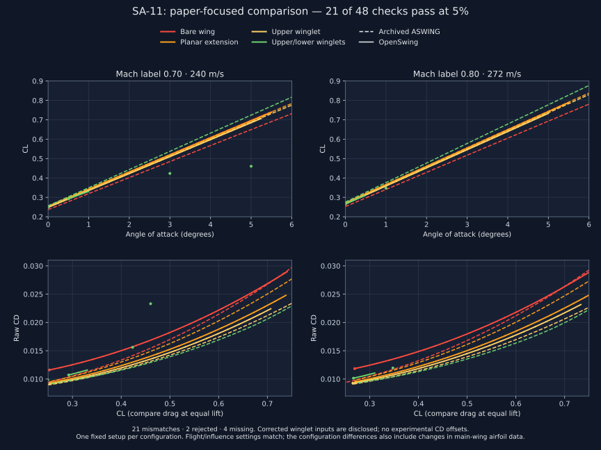
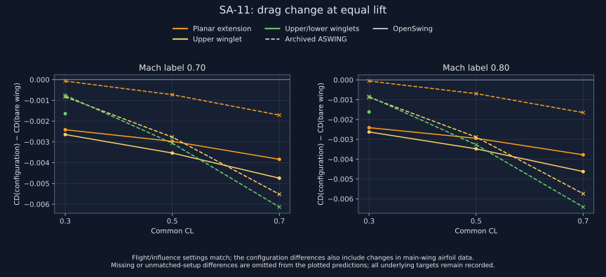

5% tolerance. Four configurations, two speeds, CL at 1°, 3°, 5° and CD at CL 0.3, 0.5, 0.7. Targets are the paper's archived ASWING curves, not experiment.
The same 48 targets and 5% tolerance are retained. This update adds coverage; it changes no solver equations or settings. The original archive remains 1,060/9,184. All 4 missing checks and 2 rejected checks remain required here.
| Configuration | Pass | Mismatch | Rejected | Missing | Failed error median / max |
|---|---|---|---|---|---|
| Bare wing | 2/12 | 10 | 0 | 0 | 7.12% / 18.90% |
| Planar extension | 8/12 | 4 | 0 | 0 | 7.41% / 8.76% |
| Upper winglet | 11/12 | 1 | 0 | 0 | 5.25% / 5.25% |
| Upper/lower winglets | 0/12 | 6 | 2 | 4 | 11.82% / 36.42% |
Missing comparisons decreased from 8 to 4. No new passes: drag at CL = 0.3 differs by +11.26% / +12.38% at the two speeds. The 240 m/s, 3° lift result is 21.21% low; the 272 m/s, 3° state rejects at local normal Mach 1.042. Original section lift limits remain unchanged.
The direct stall-pressure drag term is less than 0.6% of the low-lift drag discrepancy; this does not isolate indirect stall effects on circulation. Matched-lift force accounting and source hashes.
The earlier upper-winglet same-angle comparison remains recorded as 294/294. Current equal-lift results at CL=0.7: Mach label 0.70: pass (+4.188% CD error); Mach label 0.80: mismatch (+5.253% CD error). Flight/influence settings match; the configuration differences also include changes in main-wing airfoil data.

Flight/influence settings match; the configuration differences also include changes in main-wing airfoil data. These supplementary differences are not counted again in the 48 checks.

| Configuration | Mach label | ASWING ΔCD | OpenSwing ΔCD |
|---|---|---|---|
| Planar extension | 0.70 | -0.00072622 | -0.00297151 |
| Planar extension | 0.80 | -0.00069303 | -0.00294776 |
| Upper winglet | 0.70 | -0.00276893 | -0.00353586 |
| Upper winglet | 0.80 | -0.00288372 | -0.00347805 |
| Upper/lower winglets | 0.70 | -0.00306291 | Unavailable |
| Upper/lower winglets | 0.80 | -0.00327111 | Unavailable |
Download plot · All 48 checks and source hashes · Independent verification · Progress history
Same-main-wing control and main-mesh sensitivity: a separate diagnostic removes the winglets while preserving all main-wing data and nodes. Its results are not added to the primary score.
Observed 2026-11-08T23:13:27.709172+00:00. Latest coverage update: 6 serial physical solves; 5 accepted and 1 rejected. Accepted fields and all 48 comparison decisions were independently checked. No browser, Vite or background jobs were started.